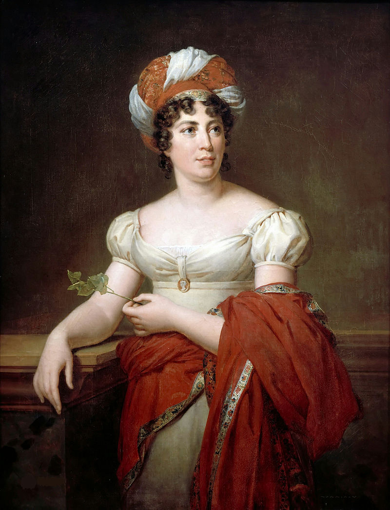
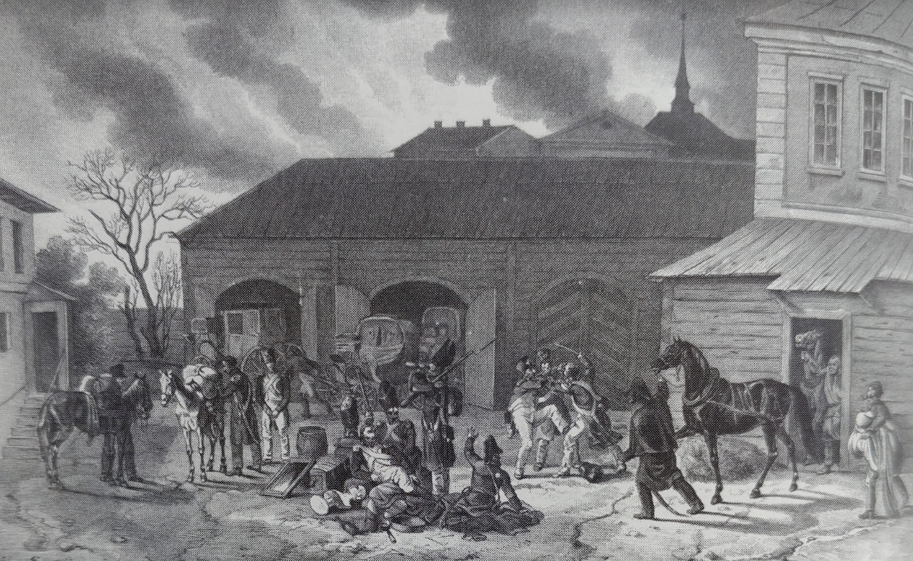
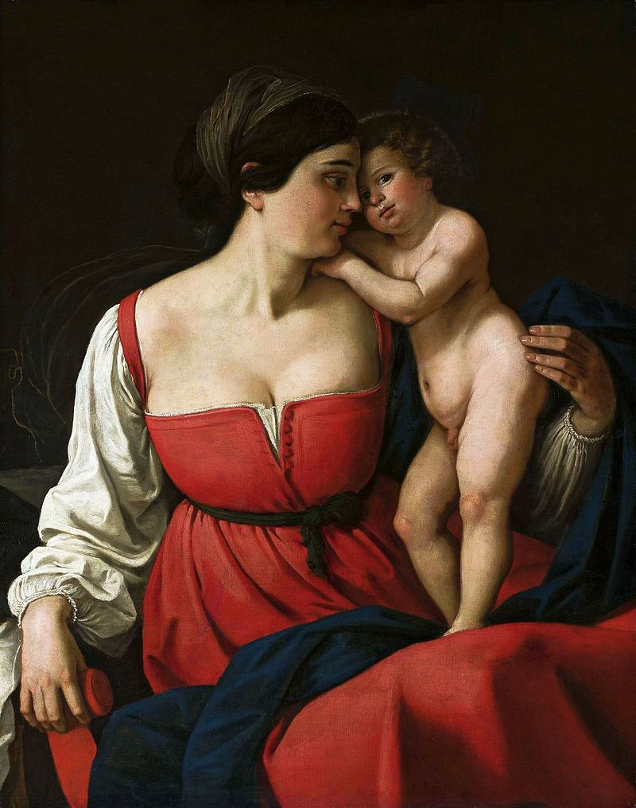
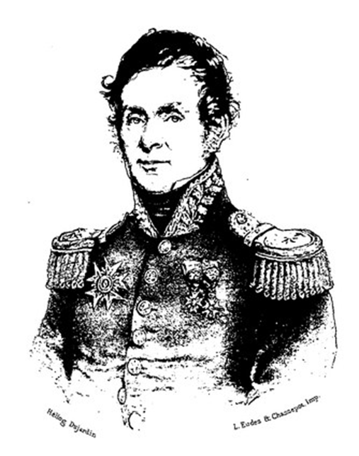

1812 모스크바 대화재 (1) - 방화? 실화? 또는 필연
게시: 2020-12-14T06:30:43+09:00
모스크바 주지사인 로스톱친은 러시아군이 나폴레옹을 간단히 무찌를 것이라고 큰소리를 치면서도, 이미 여러번에 걸쳐 '만에 하나라도' 프랑스군이 모스크바를 점령한다면 그들은 잿더미 이외에 아무 것도 손에 넣지 못할 것이라고 공공연하게 선언한 바 있었습니다. 어떤 일이 있어도 모스크바를 사수하겠다는 쿠투조프의 약속을 애초부터 로스톱친은 믿지 않았습니다. 그래서 9월 13일 저녁에 쿠투조프로부터 모스크바를 포기한다는 공식 통보를 받기 전부터, 로스톱친은 시내에 불을 지를 준비를 하고 있었습니다. 소화 펌프를 모두 시내에서 철수시키고 인화물을 곡물과 의류, 가죽 등의 상품을 저장한 창고 주변에 가져다 놓는 것이었습니다. 그는 이 모든 준비와 실행을 모스크바 경찰 국장인 보로넨코(Voronenko)에게 지시하면서, 창고 뿐만 아니라 '불에 타는 모든 것'을 다 태워버리라고 말했습니다. 그런데 9월 13일 밤, 갑작스럽게 모스크바 철수가 이루어지면서 모든 것이 엉망이 되어 버렸습니다. 쿠투조프가 절대 만나고 싶지 않았던 로스톱친을 뒷골목에서 마주쳐야 할 정도로 혼란스러웠던 9월 14일 새벽은 물론, 9월 14일 오후까지도 모스크바 서문에서는 프랑스군이 계속 입성하는데 동문에서는 아직도 피난민들과 일부 러시아군이 도시를 빠져나가고 있었습니다. 이런 상황에서 방화가 제대로 이루어질 수가 없었습니다. 보로넨코의 부하들은 9월 14일 밤 어둠이 깔리자 미리 지정된 주요 창고에 불을 질렀으나, 불은 그다지 인상적인 대화재로 번지지 않았고, 모스크바를 점령한 프랑스군이 별로 대수롭지 않게 생각할 정도였습니다. 그 날 나폴레옹의 심기를 가장 괴롭힌 것은 정체를 알 수 없는 창고 화재 소식이 아니라 러시아 관료들이 아무도 자신을 환영하기 위해 성문 앞으로 나오지 않았다는 것이었습니다. 로스톱친의 '모스크바 불바다' 작전은 이대로 무산되는 듯 했습니다. 결국 다음날인 15일 오전, 러시아 귀족들의 열쇠 전달식을 포기하고 모스크바에 입성한 나폴레옹은 창고에 상당한 분량의 곡물이 그대로 남아있다는 소식 등 상황을 보고 받았습니다. 이때 모스크바 여기저기서는 작은 화재가 일어나 그 검은 연기를 볼 수 있었습니다. 하지만 나폴레옹을 비롯한 프랑스군 지휘부는 아직까지도 그 심각성을 인식하지 못했습니다. 생각해보면 그럴 수도 있는 것이, 주민들 대부분이 피난을 떠나 버려진 도시에 점령군이 진주하면 여기저기서 약탈이 일어날 수도 있고, 또 그 동안 굶주렸던 병사들이 곡물이든 육류든 감자든 손에 잡히는대로 수프를 끓여 먹는 과정에서 불을 피울 수 밖에 없었습니다. 여기저기에서 보이는 검은 연기는 그런 혼란과 취사용 모닥불을 생각하면 자연스러운 것이었습니다. 나폴레옹은 모르티에(Mortier) 원수를 모스크바 주지사로 임명하면서 '병사들이 절대 빈집을 약탈하지 못하도록 하라'는 지시를 내리고, 크레믈린 궁전에 마련된 처소에서 평온하게 잠자리에 들었습니다. 그런데 그날 밤, 시내 곳곳에서 화재가 큰 규모로 번지기 시작했습니다. 여기에는 여러가지 설명과 추측이 존재합니다. 톨스토이의 '전쟁과 평화'에서는 이 모스크바 대화재가 로스톱친의 게획적인 방화 때문이 아니라 점령 과정에서 벌어진 혼란 속에서 시작된 실화가 걷잡을 수 없이 번진 것처럼 묘사되어 있습니다. 그에 비해 시종으로부터 '시내가 불길에 휩싸였다'라는 경악스러운 소식을 잠자리에서 들어야 했던 콜랭쿠르(Armand de Caulaincourt)에 따르면 그건 명백한 로스톱친의 계획적 방화였습니다. 콜랭쿠르의 기록에 따르면 모스크바 주요 건물 곳곳에서 도화선이 연결된 인화물질을 병사들이 찾아냈으며 자신이 직접 그런 도화선을 보았다고 했습니다. 또, 나폴레옹이 모스크바에 입성하기 몇 주 전까지 모스크바에 있었고 이 기간 중 로스톱친을 여러번 만났던 프랑스의 반-나폴레옹 망명인사인 스탈(Anne Louise Germaine de Staël-Holstein) 부인도 모스크바 대화재는 로스톱친의 방화라고 단언했습니다.

(베토벤이나 알렉산드르처럼 스탈 부인도 처음에는 나폴레옹을 영웅으로 보았으나 이런저런 이유로 반-나폴레옹 인사가 되었습니다. 이미 나폴레옹을 피해 망명 생활을 한 바 있었던 스탈 부인은 1810년 다시 망명을 해야했는데, 오스트리아를 거쳐 1812년 키에프에 온 뒤 결국 콘스탄티노플로 갈 생각이었으나 당시 오스만 투르크에 흑사병이 돈다는 소식을 듣고 결국 모스크바로 향했습니다. 그런데 나폴레옹이 침공해온다는 소식을 들은 그녀는 결국 모스크바를 떠나 러시아의 수도 페체르부르그로 가야했고, 거기서 알렉산드르도 몇 번 만날 수 있었습니다. 스탈 부인은 알렉산드르와 이야기해보고는 그를 음험한 마키아벨리 주의자로 평가했습니다.) 이 화재의 시작에 대해서는 이렇게 이견이 있지만, 분명한 사실은 로스톱친이 철수 직전에 방면한 교도소의 러시아 죄수들과 9월 15일 밤의 강풍이 대화재에 큰 역할을 했다는 것입니다. 로스톱친은 철수 직전에 모스크바의 교도소에 수감된 모든 죄수들을 석방하라는 명령을 내렸는데, 분명히 좋은 의도는 아니었습니다. 안에서 새는 바가지 밖에서도 샌다고, 러시아 측에게 골칫덩어리였던 부랑자들과 범죄자들이 프랑스 측에게도 골칫덩어리가 될 거라고 생각했던 것 같습니다. 그의 기대대로, 이들은 프랑스군이 입성하는 상황에서도 머스켓 소총으로 무장하고 크레믈린을 약탈하다가 프랑스군과 교전을 벌이는 등 '모스크바에도 싸나이들이 있다'는 것을 보여주었습니다. 프랑스군의 대포가 이들을 쫓아버리기는 했으나, 이들은 전혀 기가 죽지 않았습니다. 범죄자들에게 당시 모스크바는 배트맨이 없는 고담 시티였습니다. 자신들을 혐오하며 채찍질하던 오만한 귀족들이 거미새끼처럼 흩어져 도망쳤다는 사실이 그들에게는 그렇게 신이 날 수가 없었고, 지키는 사람 없이 버려진 집들이 지천인데 경찰과 헌병들이 없는 이 상황은 정말 꿈만 같은 일이었습니다. 그들은 평소 해보고 싶었던 모든 것, 즉 가택 침입과 귀중품 약탈, 훔쳐낸 보드카 병째로 원샷하기 등을 마음껏 누렸습니다. 그 중에는 꼴보기 싫은 귀족놈들의 주택에 불을 지르는 것도 포함되어 있었습니다. 특히 정체를 알 수 없지만 왠지 경찰 같은 느낌의 러시아인들이 조직적으로 움직이며 곳곳에 불을 지르자고 충동질하는 상황에서는 더욱 그랬습니다. 하지만 배트맨이 없다고 해서 고담 시티 아니 모스크바가 텅 빈 상태가 아니었습니다. 저스티스 리그의 영웅들은 아니더라도 10만 가까운 프랑스군이 모스크바를 점령했는데 이들은 뭘 하고 있었을까요 ? 알고보니 이들은 저스티스 리그가 아니라 조커의 부하들에 가까운 무리들이었습니다. 활기찬 도시를 꿈꾸며 들어왔다가 텅빈 시내에 실망했던 그랑다르메의 병사들은 화재가 발생하자 불을 끄러 우왕좌왕하며 불난 집에 뛰어들었다가, 슬그머니 불을 끄기 보다는 어차피 불에 다 타버릴 귀중품들을 챙기는 것에 열을 올리기 시작했습니다. 어차피 소방 펌프를 비롯한 소방 도구가 없었던 병사들은 할 수 있는 일도 별로 없었습니다. 시작이 어려울 뿐 일단 시작하고나면 그 다음은 일사천리였습니다. 눈치를 보며 화재가 난 주택으로 뛰어들던 병사들은 곧 아직 불이 나지 않은 멀쩡한 주택의 대문을 걷어차고 들어가기 시작했습니다. 때마침 거세게 불어오는 바람을 타고 걷잡을 수 없이 번지기 시작하는 화재가 어차피 모든 것을 태워버릴 것 같은데, 굳이 불이 붙을 때까지 기다릴 필요가 없었던 것이지요.

(알브레히트 아담(Albrecht Adam)이 직접 목격한 바를 그린 1812년 모스크바 화재 당시의 그림입니다. 온갖 약탈물이 길바닥에 널려 있고 일부 병사들이 그 분배를 놓고 서로 싸우는 듯한 모습도 보입니다. 아직 불길이 저 동네까지는 번지지 않은 상황입니다. 제가 주된 스토리 라인을 가져오고 있는 아담 자모이스키의 책 '1812 Napoleon's Fatal March on Moscow'에 실린 삽화입니다.)
하지만 병사들이야 원래 그렇게 약탈자로 돌변하기가 손바닥 뒤집기처럼 쉽다고 하지만, 모스크바에는 장교들과 장군들도 잔뜩 있었습니다. 이들은 왜 병사들을 통제하지 않았을까요? 나폴레옹의 의붓아들이자 이탈리아 왕국의 부왕이던 외젠 휘하의 독일계 종군 화가였던 알브레히트 아담(Albrecht Adam)의 수기에 그 생생한 목격담이 적혀 있습니다. 시내에 화재가 발생하자 일단 거리로 뛰어나온 아담은 어떤 고위 장성과 마주쳤는데, 평소 잘 알던 이 장군은 잘 만났다는 듯이 아담을 데리고 어느 러시아 귀족의 저택으로 들어갔습니다. 그 저택은 온갖 값진 미술품으로 잔뜩 장식이 되어 있었습니다. 거기서 장군은 아담에게 이렇게 말했다고 합니다. "자, 므슈 아담, 이제 그림 도둑이 됩시다!" 일개 사병이나 저지를 불난 집 약탈질을 고위 장성이 이렇게 노골적으로 저지르며 자신을 부추기는 것에 아담은 큰 충격을 받았다고 합니다. 그러나 그런 그도 곧 정신을 차리고 어떤 이탈리아 화가가 그린 성모 마리아 그림(Madonna)을 훔쳐가지고 나왔다고 합니다.

(성모 마리아를 그린 그림을 마돈나(Madonna)라고 합니다. 이 그림은 19세기 초반 어느 이탈리아 무명화가가 그린 마돈나입니다. 아마 아담이 훔쳐가지고 나온 마돈나도 그 그림 화풍 같은 것으로 이탈리아 화가가 그린 것이라고 짐작했을 것 같습니다.) 9월 15일 밤~ 16일 새벽의 화재와 약탈은 상호 비례 관계에 있었습니다. 화재가 진행되면서 점잖던 장군들도 약탈에 뛰어들었고, 약탈 행위가 가열되면서 화재는 더욱 번져나갔습니다. 불은 프랑스인이건 러시아인이건 모든 이들의 체면과 명예, 긍지와 규율을 모조리 태워버리고 연기로 감춰주었습니다. 병사들은 불이 붙은 주택에 뛰어들어 값비싼 가구와 의류 등을 가지고 거리로 나왔다가, 더 비싸보이는 약탈물이 길거리에 쌓여 있는 것을 보고는 가지고 나온 약탈물을 버리고 더 비싼 것들을 주워가는 일도 많았습니다. 그런 식으로, 모스크바의 길거리는 버려진 약탈물이 쌓이기 시작했고, 이런 의류와 가구에 불똥이 날아들어 화재가 더 번졌습니다. 그런 상황에 글자 그대로 불을 지른 것은 병사들이 주택들의 지하 술창고를 발견한 뒤부터였습니다. 그 도시의 이름은 모스크바였고, 보드카가 없는 집을 찾기가 더 어려웠습니다. 이런 상황에서 소문은 정말 광속으로 퍼졌습니다. 술 이야기는 모스크바 시외에 주둔하고 있던 다부 원수의 제1 군단 캠프까지 쏜살같이 날아갔습니다. 원래 강철 같은 군기로 유명하던 다부의 군단 병사들도 곧 시내로 뛰어들어 술을 찾아다녔습니다. 불라르(Jean-François Boulart) 대령은 다부의 병사들이 술병과 설탕, 홍차, 가구, 모피 따위의 약탈물을 챙겨들고 시외의 캠프로 돌아가는 모습을 지켜보아야 했습니다.

(불라르는 랭(Reims) 출신으로서 혁명 이후 17세의 나이에 포병 학교에 입학하여 포병 장교가 된 사람으로서, 이탈리아 방면군과 독일 방면군 등에서 고루 활약했습니다. 이후 나폴레옹의 근위대 포병 장교로 복무했고, 저 사건 때에도 근위대 소속이었습니다. 나폴레옹의 백일천하 때도 나폴레옹 편에 붙어서 강제 전역 당했으나, 결국 스트라스부르의 포병 학교에 보직을 받았습니다.) 이런 혼란이야말로 진짜 리더를 필요로 하는 상황입니다. 이때 나폴레옹은 무엇을 하고 있었을까요? Source : 1812 Napoleon's Fatal March on Moscow by Adam Zamoyski
en.wikipedia.org/wiki/Fire_of_Moscow_(1812)
en.wikipedia.org/wiki/Germaine_de_Sta%C3%ABl
en.wikipedia.org/wiki/Madonna_(art)
www.napoleon-histoire.com/memoires-du-general-dartillerie-boulart-wagram/